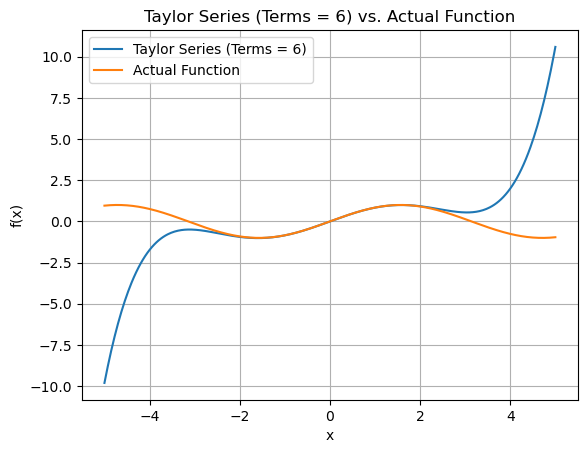

import numpy as np
import matplotlib.pyplot as pltTaylor Series
A Taylor series is an infinite sum that approximates a function using its derivatives at a point, helping express complex functions as simpler polynomials for analysis and calculation.
\[ f(x) = f(a) + f'(a)(x - a) + \frac{f''(a)(x - a)^2}{2!} + \frac{f'''(a)(x - a)^3}{3!} + \cdots \]
Import Libraries
Factorial
\[ x! = x \times (x-1) \times (x-2) \times \ldots \times 3 \times 2 \times 1 \]
def factorial(x):
if x<=1:
return 1
else:
product=1
for i in range(1,x+1):
product*=i
return productDefining Function
def function(x):
return 1 + x + x**2 + x**3 + x**4Setting up the variables
x=1 # Point where we like to approximate the value of fxn
a=0 # Value of x where we know about the fxnFind nth derivative of a fxn at point a
def derivative(f, x, n):
if n == 0:
return f(x)
else:
h = 1e-2
df = (derivative(f, x + h, n - 1) - derivative(f, x, n - 1)) / h
return dfExact Ans
exact=function(x)Estimated Answers
def estimate(terms, a, x):
sum = 0
for i in range(terms):
sum += derivative(function, a, i) * (x - a)**(i) / np.math.factorial(i)
return sumorder = []
errors = []
print("Order\tExact\t\tEstimate\tError (%)")
print("-------------------------------------------------------")
for i in range(1, 11):
estimate_ans = estimate(i, a, x)
error = np.abs(exact-estimate_ans)/exact*100
print(f"{i-1}\t{exact:.9f}\t{estimate_ans:.9f}\t{error:.9f}%")
order.append(i-1)
errors.append(error)
plt.figure(figsize=(5, 3))
plt.plot(order, errors, marker='o')
plt.xlabel("Order")
plt.ylabel("Error (%)")
plt.title("Error vs. Order")
plt.grid(True)
plt.show()Order Exact Estimate Error (%)
-------------------------------------------------------
0 5.000000000 1.000000000 80.000000000%
1 5.000000000 2.010101000 59.797980000%
2 5.000000000 3.040801000 39.183980000%
3 5.000000000 4.100801000 17.983980001%
4 5.000000000 5.100801002 2.016020044%
5 5.000000000 5.100800873 2.016017454%
6 5.000000000 5.100806732 2.016134644%
7 5.000000000 5.100599667 2.011993336%
8 5.000000000 5.106547290 2.130945803%
9 5.000000000 4.963363765 0.732724697%Plotting the Exact and Approx Functions
x_values = np.linspace(-5, 5, 400)
a = 0
for terms in range(2,6):
plt.figure()
approx_y_values = [estimate(terms, a, x) for x in x_values]
plt.plot(x_values, approx_y_values, label=f'Taylor Series (Terms = {terms})')
plt.plot(x_values, function(x_values), label='Actual Function')
plt.title(f"Taylor Series (Terms = {terms}) vs. Actual Function")
plt.xlabel("x")
plt.ylabel("f(x)")
plt.legend()
plt.grid(True)
plt.show() Plotting the graphs for Sin(x)
def function(x):
return np.sin(x)
x_values = np.linspace(-5, 5, 400)
a = 0
for terms in range(2,10,2):
plt.figure()
approx_y_values = [estimate(terms, a, x) for x in x_values]
plt.plot(x_values, approx_y_values, label=f'Taylor Series (Terms = {terms})')
plt.plot(x_values, function(x_values), label='Actual Function')
plt.title(f"Taylor Series (Terms = {terms}) vs. Actual Function")
plt.xlabel("x")
plt.ylabel("f(x)")
plt.legend()
plt.grid(True)
plt.show() 